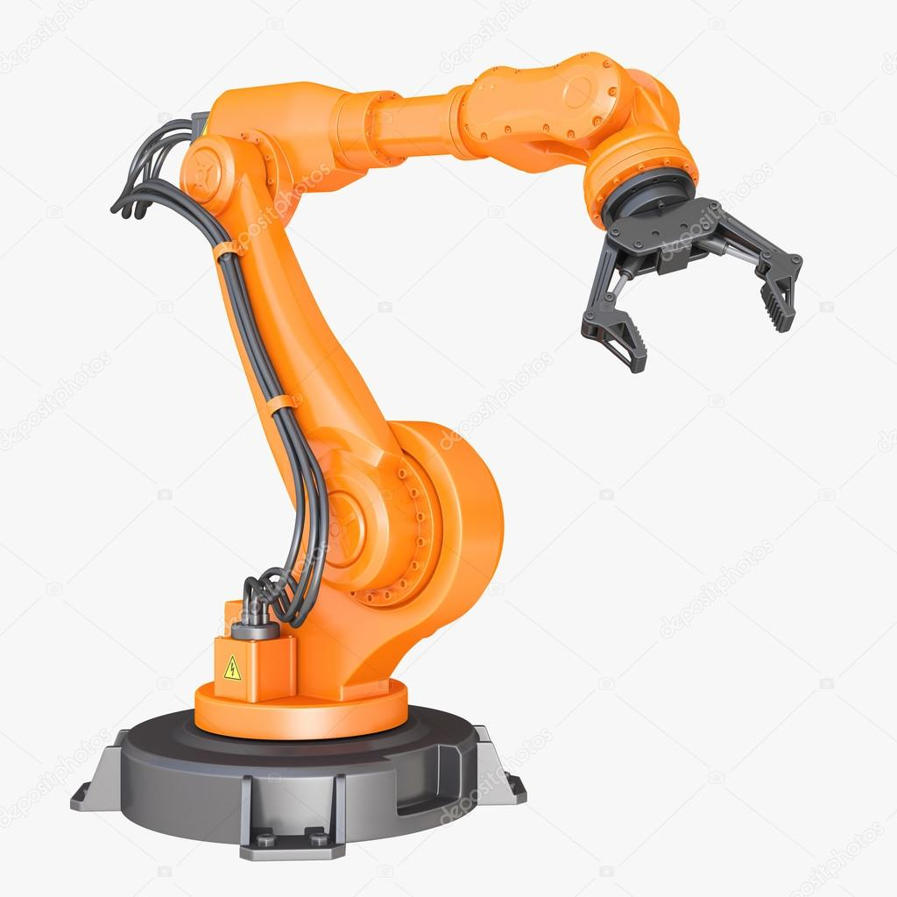
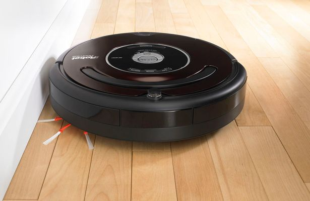

|
|
|
|---|
| Robot umanoid (sau android) |
| Imaginea roboților umanoizi a luat formă în literatură, mai ales în romanele lui Isaac Asimov în anii 1940. Acești roboți au fost pentru un timp lung irealizabili. Pentru realizarea lor trebuiesc rezolvate multe probleme importante. Ei trebuie să acționeze și să reacționeze autonom în mediu, mobilitatea lor fiind restrânsă la cele două picioare ca locomoție. Pe deasupra mai trebuie să fie capabili de a lucra cu brațele și mâinile. Din anul 2000 probleme de bază par să fie rezolvate (cu apariția lui ASIMO (Honda)). Între timp apar dezvoltări noi în acest domeniu.
Roboții umanoizi pot fi descriși ca roboți pășitori. |  |
|---|
| George Devol a înregistrat în anul 1954 primul patent pentru un robot industrial. Roboții industriali din prezent nu sunt de obicei mobili. După forma și funcția lor, domeniul lor operațional este restrâns. Ei au fost introduși pentru prima oară pe linia de producția a General Motors în 1961. Roboții industriali au fost folosiți prima dată în Germania la lucrări de sudură începând din 1970. |  |
|---|
| | Robotul casnic lucrează autonom în gospodărie. aplicațiile cunoscute sunt:
- robot aspirator (produs de expemplu de: Electrolux, Siemens sau iRobot)
- robot de tuns gazonul
- robot de spălat ferestrele
|  |
|---|
| Roboții exploratori sunt roboți care operează în locații greu accesibile și periculoase teleghidați sau parțial autonom. Aceștia pot lucra de exemplu într-o regiune aflată în conflict militar, pe Lună sau Marte. O navigare teleghidată de pe pământ în ultimele două cazuri este imposibilă din cauza distanței. Semnalele de comunicatie ajung la destinatie in cateva ore , iar receptionarea lor dureaza la fel de mult. În astfel de situații roboții trebuie să fie programați cu mai multe tipuri de comportare, din care ei să aleagă pe cel mai adecvat și să-l execute.
Acest tip de robot dotat cu senzori a fost folosit și la cercetarea puțurilor din piramide. Mai mulți cryoboți au fost deja testați de NASA în Antarctica. Acest tip de robot poate pătrunde până la 3.600 de m prin gheață. Cryoboți pot fi astfel folosiți în cercetarea capelor polare pe Marte și Europa în speranța descoperirii de viață extraterestră. |  |
|---|